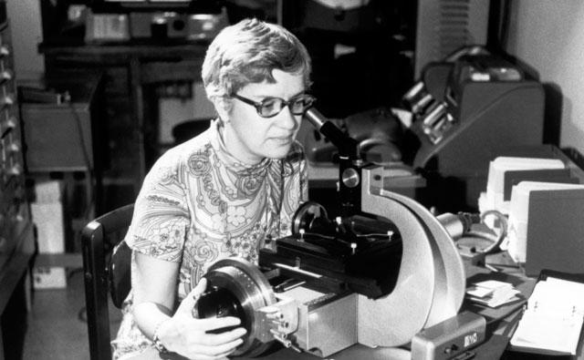

Dr. Vera Rubin
The woman who confirmed the existance of dark matter

A timeline of Vera Rubin's life:
- 1928 - Born Vera Florence Cooper on July 23 in Philadelphia, Pennsylvania
- 1938 - Family moved to Washington, D.C. where Vera became interested in astronomy by star gazing through her bedroom window
- 1944 - Graduated from Coolidge Senior High School
- 1948 - Earned bachelor's degree in astronomy from Vassar College
- 1951 - Earned master's degree in astronomy from Cornell University where she studied the rotation of 109 galaxies
- 1954 - Completed her Ph.D. dissertation at Georgetown University concluding that galaxies clumped together instead of
being uniformly distributed throughout the universe
- 1955 - Began working at Georgetown University where she held the positions of Research Associate Astronomer, Lecturer and
Assistant Professor of Astronomy
- 1963 - Started a collaboration with Ceoffrey and Magaret Burbidge to study the rotations of galaxies at McDonald Observatory
- 1965 - Became a staff member in the Department of Terrestrial Magnetism at Carnegie Institute
- 1965 - Applied to observe at Palomar Observatory and became the first female astronomer to observe there
- 1970 - Observed that the orbital speed of stars in the outer parts of the Andromeda galaxy were constant rather than declining as
expected from Newton's laws. Provided evidence for the theory of dark matter, proposed by Fritz Zwicky in 1933.
- 1981 - Elected to the National Academy of Sciences
- 1996 - Received the Royal Astronomical Society's Gold Medal. The first woman to do so since Caroline Herschel in 1828
- 2016 - Passed away on December 25 of complications associated with dementia
"There is no problem in science that can be solved by a man that cannot be solved by a woman."
- Vera Rubin